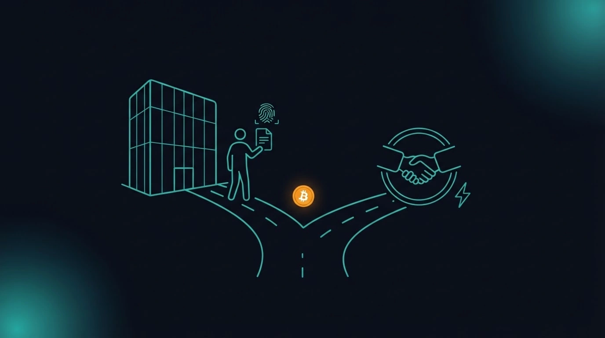

Nota importante
Questo articolo è puramente descrittivo e informativo. Non è un invito a evitare tasse, a non dichiarare le criptovalute o ad aggirare le regole del proprio paese. È solo un'analisi tecnica dei due modi in cui, oggi, una persona può acquistare Bitcoin. Ogni scelta deve rispettare le leggi fiscali e finanziarie in vigore nel proprio stato di residenza. In caso di dubbi, consulta un commercialista o un avvocato.
Perché parliamo di questo tema adesso
Fino a qualche anno fa, comprare piccole quantità di Bitcoin senza fornire un documento era relativamente semplice: molti servizi consentivano scambi anonimi entro certe soglie mensili — spesso intorno a mille euro al mese. Quel periodo è finito.
Oggi in Europa il regolamento MiCA è pienamente applicabile dal 30 dicembre 2024, con periodo transitorio che si conclude entro il 1° luglio 2026 nei vari stati membri. In pratica, qualsiasi impresa che offra scambio Bitcoin nell'Unione Europea deve essere autorizzata come CASP e richiedere l'identificazione del cliente — il cosiddetto KYC, Know Your Customer.
Restano oggi due strade:
- Il canale centralizzato con KYC (exchange e imprese autorizzate).
- Il canale peer-to-peer (scambi tra privati, con o senza un servizio di garanzia).
Entrambe sono legali di per sé: il punto non è "una nasconde e l'altra no", ma quali dati lasciamo in giro e quali rischi accettiamo. Vediamoli con onestà.
La strada P2P, va detto, non è "nuova": è la strada originaria, quella che Bitcoin è stato progettato per rendere possibile fin dal primo giorno. È l'ambiente attorno a essa che è cambiato.
Il canale centralizzato con KYC
Un exchange centralizzato ti chiede documento, selfie, indirizzo, a volte una prova di residenza. In cambio, tutto è molto semplice: accedi con email e password, colleghi il conto bancario, invii un bonifico, compri e vendi con pochi click.
Cosa succede ai tuoi dati. L'exchange li conserva insieme allo storico completo: quanti Bitcoin hai comprato, quando, a quale prezzo, verso quale indirizzo li hai trasferiti. Questi dati, per legge, vengono conservati per anni e possono essere condivisi con autorità fiscali e forze dell'ordine su richiesta motivata.
Vantaggi pratici:
- Esperienza d'uso semplice, adatta ai principianti.
- Commissioni contenute, spesso intorno all'1% del prezzo di mercato.
- Grandi volumi disponibili senza attese.
- Fatture e documenti pronti per la dichiarazione dei redditi.
Punti da tenere presenti:
- Ogni tua operazione è tracciata e conservata.
- Se il servizio subisce una fuga di dati — cosa purtroppo non rara — il tuo nome, la tua email, il tuo documento e la stima dei tuoi Bitcoin potrebbero finire in liste circolanti. Non è un rischio teorico: negli ultimi anni ci sono stati diversi episodi di questo tipo, e l'intelligenza artificiale rende più facile incrociare dati provenienti da fonti diverse.
- Il rischio non è solo digitale. Un elenco che associa un nome a una quantità significativa di Bitcoin può diventare interessante per criminali comuni: furti mirati, estorsioni, "rapimenti da chiave inglese" sono situazioni che, ovunque nel mondo, sono state segnalate quando l'informazione è uscita dai canali riservati.
Un inciso sul "rapimento da chiave inglese"
L'espressione — dall'inglese "$5 wrench attack" — nasce da una vignetta del fumettista xkcd. L'idea: la crittografia di Bitcoin è inespugnabile, ma la persona che detiene le chiavi no. Nella vignetta, un aggressore rinuncia a violare la cifratura e usa direttamente una chiave inglese sul proprietario finché non consegna il seed.
Tradotto in casi reali: aggressioni in casa, rapine mirate, sequestri di familiari come leva. La cronaca degli ultimi anni ne riporta episodi in vari paesi. Quasi sempre condividono un elemento: la vittima era pubblicamente identificabile come detentrice di grandi somme — a volte per proprie dichiarazioni sui social, altre perché i suoi dati erano finiti in liste dopo un data breach.
Non è allarmismo, è un rischio da tenere in proporzione a quanto si possiede. Ma dimostra che la sicurezza di Bitcoin non è solo un tema tecnico.
Il canale peer-to-peer
Comprare peer-to-peer significa scambiare Bitcoin direttamente con un'altra persona, senza un'azienda che faccia da intermediario obbligatorio. La transazione è protetta da un servizio di escrow multi-firma: i Bitcoin del venditore vengono bloccati in un contratto che li rilascia solo quando entrambe le parti confermano lo scambio, o quando un terzo garante interviene in caso di disputa.
Esistono servizi P2P che funzionano da anni: alcuni gestiscono importi piccoli su Lightning Network — anche tramite protocolli aperti, non-custodial e senza KYC — altri consentono anche cifre grandi. Si tratta di software e protocolli reali, in uso quotidianamente.
Come funziona uno scambio P2P, in breve
- Il venditore pubblica un annuncio con importo, prezzo e metodo di pagamento.
- Il compratore apre la trattativa dentro il sistema (chat tracciata).
- Il servizio blocca in escrow multi-firma i Bitcoin del venditore: nessuno dei due può muoverli da solo.
- Il compratore invia il pagamento all'IBAN indicato.
- Il venditore verifica e conferma nel sistema.
- L'escrow rilascia i Bitcoin al compratore.
- Le parti si valutano a vicenda: la reputazione conta per gli scambi futuri.
Se qualcosa non torna, chiunque può aprire una disputa: un moderatore esamina chat e movimenti e decide come sbloccare i fondi. Con un servizio serio, il rischio di truffe dirette è basso.
Vantaggi pratici:
- Non lasci un documento e un selfie in un database aziendale.
- Ogni singola controparte vede solo quella singola transazione, non l'intero storico dei tuoi acquisti.
- Se un venditore vende i tuoi dati o li perde in un data breach, in genere si tratta al massimo di un IBAN e un nome — non foto documento, indirizzo di casa, quantità totali.
- Coerente con la filosofia originaria di Bitcoin (autonomia, minima fiducia in terze parti).
Punti da tenere presenti:
- Costo del "premio privacy". Il prezzo P2P è di solito circa il 5% più alto del prezzo di mercato in acquisto, e circa il 5% più basso in vendita. Su cifre importanti, non è poco.
- Curva di apprendimento. Serve capire come funziona l'escrow, come si aprono le dispute, come si legge la reputazione di una controparte.
- Tempi più lenti. Trovare la controparte giusta può richiedere ore o giorni, soprattutto per importi grandi.
- Rischio di truffe "indirette". Se dai in giro il tuo IBAN, qualcuno potrebbe usare il tuo nome per truffare altre persone (ad esempio: mette un annuncio di vendita di un oggetto, si fa pagare sul tuo IBAN, poi sparisce; la vittima denuncia — e denuncia te). Su questo torniamo tra poco.
Le varianti del P2P
Ne esistono tre "sapori":
- P2P on-chain classico — Bitcoin sulla blockchain principale, adatto a importi medi e grandi, escrow multi-firma 2-di-3.
- P2P su Lightning Network — importi piccoli o medi, scambio quasi istantaneo, commissioni di rete trascurabili.
- P2P di persona (in contanti) — la forma più antica e privata: incontro fisico, contante e transazione dallo smartphone. Adatto solo a piccoli importi e in luogo pubblico.
Un dettaglio importante: una piattaforma che fa solo da garante tecnico non-custodial non è un CASP soggetto a KYC. La differenza chiave è chi tiene i fondi.
Perché il P2P costa di più (e a volte di meno)
Il "premio privacy" del 5% circa è il prezzo naturale di un mercato più piccolo e meno liquido. Ma attenzione al rovescio: se tu sei il venditore, quel 5% lavora a tuo favore. Chi vende in P2P spesso spunta un prezzo superiore al mercato, mentre su un exchange di solito perde qualcosa in commissioni e spread.
Vantaggi e svantaggi a confronto
![Infografica di confronto tra KYC ed exchange centralizzato e peer-to-peer. KYC: vantaggi — semplice per principianti, prima operazione in pochi minuti, commissioni basse circa 1%, grandi volumi immediati, documenti pronti per il fisco; svantaggi — documento e selfie obbligatori, storico completo conservato, alto rischio da data breach, nome e quantità BTC esposti, rischio furti ed estorsioni mirati, poco coerente con la filosofia Bitcoin. Peer-to-peer: vantaggi — niente documenti in database, ogni controparte vede una sola operazione, un data leak espone solo IBAN e nome, coerente con la filosofia Bitcoin, l'escrow multi-firma protegge; svantaggi — curva di apprendimento più ripida, prima operazione da ore a giorni, premio privacy di circa il 5%, rischio di truffe indirette legate all'IBAN, documenti fiscali da ricostruire, meno adatto ai principianti.](images/infografica-kyc-vs-p2p.webp)
Buone abitudini quando si usa il peer-to-peer
Se decidi di usare il P2P, alcune regole pratiche riducono molto il rischio:
- Usa sempre un servizio con escrow multi-firma serio e con storia alle spalle. I Bitcoin devono essere bloccati nel contratto prima di qualsiasi pagamento.
- Non pubblicare dati sensibili negli annunci. Nessun IBAN, nessun numero di telefono, nessuna informazione personale a chi sta solo guardando.
- Comunica solo dentro la chat del servizio, mai su canali privati esterni. Serve come prova in caso di disputa.
- Fornisci l'IBAN solo alla controparte confermata, non prima. Alcuni servizi permettono di scambiarlo solo dopo l'apertura formale del contratto.
- Verifica sempre importo e mittente. Il pagamento deve arrivare per l'esatto importo pattuito e da un IBAN intestato al nome della controparte. Se ricevi due bonifici parziali, o da nomi diversi, fermati e segnala al servizio prima di rilasciare i Bitcoin.
- Preferisci controparti con storico e reputazione, anche pagando qualcosa in più.
Un esempio di truffa indiretta
Mario vende 500 euro di BTC in P2P. Luigi paga regolarmente. Mario rilascia i Bitcoin. Tutto ok.
Il giorno dopo, però, sul conto di Mario arrivano altri 500 euro da uno sconosciuto — "Andrea" — con causale "Acconto Vespa Piaggio". Passano tre giorni e Andrea, che non vede arrivare nessuna Vespa, denuncia il proprietario dell'IBAN: Mario.
Cos'è successo? Luigi (o chi era dietro quel nome) ha usato l'IBAN di Mario come cassetta postale: ha pubblicato un finto annuncio di Vespa indicando l'IBAN di Mario. Il profitto della truffa è finito sul conto di Mario, che si trova con soldi non richiesti e una denuncia in arrivo. Ecco perché sapere cosa fare è fondamentale.
Se qualcosa va storto — cosa fare
Il rischio più insidioso nel P2P non è la truffa diretta (con un buon escrow è molto difficile), ma quello indiretto: qualcuno usa il tuo IBAN per farsi mandare soldi da una terza vittima ignara, che poi denuncia. Se ti arriva un bonifico da una persona sconosciuta:
- Non spendere quei soldi. Lasciali fermi sul conto.
- Contatta subito la tua banca, dichiarando di non riconoscere il bonifico e chiedendo istruzioni per la restituzione tramite canale bancario (non con un tuo bonifico di ritorno "fai da te").
- Valuta una denuncia contro ignoti presso le autorità competenti del tuo paese (in Italia, per esempio, polizia postale o carabinieri), per documentare che il tuo nome è stato usato senza autorizzazione.
- Conserva ogni prova: chat dentro il servizio di escrow, movimenti bancari, screenshot degli annunci.
Non è una procedura piacevole, ma è la differenza fra un problema che si risolve e un problema che si trascina.
Un consiglio pratico importante
Se ricevi soldi che non riconosci, non restituirli con un tuo bonifico "spontaneo". Sembra gentile, ma dal punto di vista della banca è esattamente ciò che farebbe un truffatore per ripulire i movimenti. Il canale corretto è lo storno bancario su richiesta formale: la tua banca contatta quella dell'ordinante, e i soldi tornano indietro dai canali ufficiali. Se il conto viene bloccato durante l'accertamento, si sblocca quando la documentazione dimostra che sei parte lesa.
Scenari d'uso: qual è più adatto a te?
- Il curioso alle prime armi. Cento o duecento euro per imparare come funziona un wallet: il KYC è la scelta più sensata, e l'esposizione dei dati resta minima perché le somme sono piccole.
- L'accumulatore da piano mensile (DCA). La comodità del KYC ha un peso enorme. Molti scelgono un ibrido: DCA su exchange KYC per la routine, P2P per le somme più consistenti.
- Il possessore di somme significative. Qui il tema privacy cambia natura. Molti tengono una parte del portafoglio via KYC (documentata al fisco) e una parte via P2P (comunque dichiarata).
- Chi vuole vendere. Il P2P può farti guadagnare qualcosa in più rispetto al mercato.
- Chi vive o si sposta all'estero. Le regole cambiano da paese a paese; discutine con un commercialista prima, non dopo.
Obiezioni comuni
"Il P2P è illegale." Falso. Vendere e comprare Bitcoin tra privati non è vietato. È regolamentata la fornitura commerciale di servizi di scambio (i CASP).
"Se compro in P2P non devo dichiarare niente." Falso, e pericoloso. Il canale d'acquisto non modifica gli obblighi verso il fisco. È come acquistare oro fisico da un privato: non ti solleva dalla dichiarazione.
"Come dimostro di averli comprati onestamente?" Nel P2P conserva sempre: chat dentro il servizio, estratti conto, screenshot degli annunci, ricevute di escrow.
Fisco e regole: la parte che dipende da te
Ogni paese ha regole diverse su:
- se e come dichiarare il possesso di criptovalute;
- come tassare le plusvalenze;
- quali soglie fanno scattare eventuali imposte di bollo o comunicazioni.
Queste regole cambiano anche nel tempo. Per questo qui non riportiamo aliquote o soglie specifiche: sarebbero informazioni con data di scadenza, e ognuno vive in un contesto normativo diverso. La regola sana è semplice: il canale con cui compri Bitcoin non modifica i tuoi obblighi di dichiarazione. Chi acquista in P2P può tranquillamente dichiarare i propri Bitcoin nel modo previsto dal proprio paese, esattamente come chi acquista su un exchange. Il P2P non è un modo per "sparire dal fisco": è un modo per non lasciare dati sensibili in database aziendali.
Per capire cosa devi effettivamente dichiarare, rivolgiti a un commercialista aggiornato sulle criptovalute del tuo paese, o alle fonti ufficiali del ministero delle finanze o dell'agenzia delle entrate locale.
Il tema di fondo: dati contro comodità
Riassumendo tutto in una frase: la scelta fra KYC e P2P è, sotto la superficie tecnica, una scelta fra comodità immediata e controllo dei propri dati nel lungo periodo.
Con il KYC paghi poco in fatica e commissioni adesso, e paghi potenzialmente tanto in futuro in esposizione dei tuoi dati. Per molti quel futuro non arriverà mai. Per altri sì, e non lo scoprono finché non accade.
Con il P2P il costo è visibile oggi (tempo, commissioni, apprendimento), ma la tua identità non finisce in nessun database aziendale. Nessuna delle due scelte è "giusta" in assoluto: chi capisce entrambe le strade prende decisioni migliori di chi ne conosce solo una.
In sintesi
- Il canale centralizzato con KYC è semplice, veloce, economico in commissioni — ma centralizza dati che, se rubati, ti espongono anche fuori dal mondo digitale.
- Il canale peer-to-peer è più impegnativo, un po' più caro, richiede attenzione a truffe indirette — ma riduce drasticamente la quantità di informazioni sensibili collegabili al tuo nome.
- Non esiste una risposta giusta per tutti. Dipende da quanto compri, con quale frequenza, in quale paese vivi, e quanto tempo sei disposto a dedicare all'apprendimento.
- In ogni caso, gli obblighi fiscali del tuo paese vanno rispettati. Il modo in cui compri non è un modo per aggirarli.
- Molti utenti esperti usano entrambi i canali insieme, dosandoli in base all'importo, alla frequenza e alle proprie priorità. È una scelta lecita e sensata.
Glossario — i termini tecnici usati in questo articolo
Piccolo dizionario per chi incontra questi termini per la prima volta. Ogni voce è spiegata in modo essenziale, senza gergo.
- KYC — Know Your Customer. L'obbligo, per una piattaforma autorizzata, di identificare chi la usa (documento, selfie, indirizzo). Tutti i tuoi dati vengono conservati dalla piattaforma.
- Peer-to-peer (P2P) — scambio direttamente fra due persone, senza intermediario obbligatorio. Spesso avviene tramite un servizio che fa solo da garante tecnico.
- Escrow (multi-firma) — un "deposito di garanzia": i Bitcoin del venditore sono bloccati in un contratto che li rilascia solo quando entrambe le parti confermano, o interviene un garante in caso di disputa. Multi-firma = servono più firme per muovere quei fondi.
- CASP — Crypto-Asset Service Provider. Nel regolamento MiCA, l'impresa autorizzata a offrire servizi crypto. Soggetta a licenza e obbligata al KYC.
- MiCA — Markets in Crypto-Assets Regulation. Il regolamento europeo sulle criptovalute, pienamente applicabile dal 30 dicembre 2024 (transitorio fino al 1° luglio 2026 nei singoli stati).
- Data breach — violazione di dati: informazioni custodite da un'azienda finiscono online o in mano a criminali.
- Rapimento da chiave inglese ($5 wrench attack) — espressione da una vignetta di xkcd. Attacco fisico al possessore per fargli consegnare le chiavi: la crittografia è inespugnabile, la persona no. Chi è pubblicamente associato a grandi quantità di Bitcoin diventa un bersaglio identificabile.
- Seed — la sequenza di 12 o 24 parole del wallet: chi la conosce controlla i Bitcoin. Va tenuta offline e mai fotografata.
- IBAN — il codice del tuo conto. Nel P2P va dato solo dopo l'apertura del contratto di escrow, mai negli annunci.
- Lightning Network — "seconda corsia" sopra Bitcoin: pagamenti quasi istantanei e commissioni minime.
- Denuncia contro ignoti — denuncia formale quando non si conosce il responsabile. Serve a documentare ufficialmente il fatto e a proteggersi da contestazioni successive.
In ogni caso, gli obblighi fiscali del tuo paese vanno rispettati. Il modo in cui compri non è un modo per aggirarli. Questo articolo ha finalità informative e non costituisce consulenza legale, fiscale o di sicurezza: le regole su dichiarazione e tassazione delle criptovalute variano per paese e nel tempo — consulta un commercialista o un avvocato aggiornato sulla materia prima di agire. SAFE21 non prende mai in custodia i tuoi fondi.